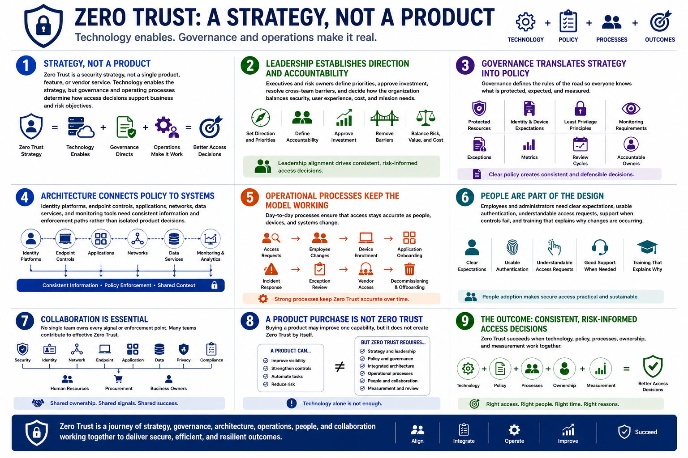

What Is Zero Trust?
Zero Trust Beyond Technology
Connecting to LMS... Progress: in progress
Version 1.0 | Date: 2026-06-16 | Educational overview of Zero Trust concepts.

Narration
Zero Trust is a security strategy, not a single product, feature, or vendor service. Technology enables the strategy, but governance and operating processes determine how access decisions support business and risk objectives.
Leadership establishes direction and accountability. Executives and risk owners define priorities, approve investment, resolve cross-team barriers, and decide how the organization balances security, user experience, cost, and mission needs.
Governance translates strategy into policy. It defines protected resources, identity and device expectations, least privilege principles, monitoring requirements, exceptions, metrics, review cycles, and accountable owners.
Architecture connects those policies to systems. Identity platforms, endpoint controls, applications, networks, data services, and monitoring tools need consistent information and enforcement paths rather than isolated product decisions.
Operational processes keep the model working. Access requests, employee changes, device enrollment, application onboarding, incident response, exception review, vendor access, and decommissioning all affect whether Zero Trust remains accurate over time.
People are part of the design. Employees and administrators need clear expectations, usable authentication, understandable access requests, support when controls fail, and training that explains why changes are occurring.
Collaboration is essential because no single team owns every signal or enforcement point. Security, identity, network, endpoint, application, data, privacy, compliance, human resources, procurement, and business owners all contribute.
A product purchase may improve one capability, but it does not create Zero Trust by itself. The strategy succeeds when technology, policy, processes, ownership, and measurement produce consistent risk-informed access decisions.